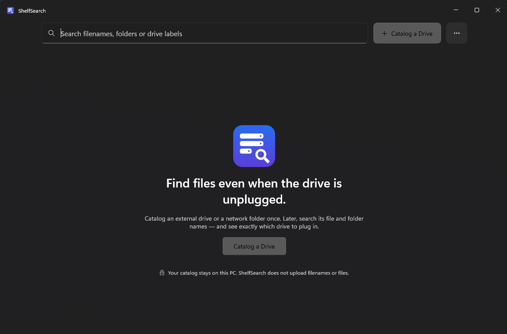

01↯
Plug in & catalog
Connect an external drive or choose a network folder. Give it a name you’ll recognize.
WD—04
✓
Available now on the Microsoft Store
Catalog a drive once. Search its files and folders whenever you need them, even when it’s unplugged.
Years of photos. Old projects. Backups of backups. Your files are safe, but finding the right disk can feel like looking for a book in a library with no catalog.
ShelfSearch gives every drive a searchable shelf label.
No cloud upload. No content scanning. Just a useful local catalog of where things live.
Connect an external drive or choose a network folder. Give it a name you’ll recognize.
ShelfSearch keeps the catalog on your PC. Your drive can go back on the shelf.
Search a filename, folder, or drive label. Get the location and know what to reconnect.
When search finds a match, you get more than a filename. You see the drive you labeled and the folder path that gets you there.

ShelfSearch reads filesystem details to build your catalog: names, paths, file sizes, and timestamps. It does not read file contents or send your catalog anywhere.
Privacy detailsClear answers, no fine-print treasure hunt.
Yes. After you catalog a drive, you can search its saved file and folder metadata while that drive is disconnected. You’ll need to reconnect it to open the actual file.
No. ShelfSearch keeps its catalog locally on your Windows PC. It records filesystem metadata such as filenames, folders, paths, sizes, and timestamps; it does not copy file contents or upload your catalog.
You can catalog a mapped drive or a selected network share, including a path such as \\nas\photos. ShelfSearch is a Windows desktop app.
No. ShelfSearch searches names and paths, not file contents. It does not create thumbnails, run OCR, or analyze media metadata.
ShelfSearch is available now for Windows from the Microsoft Store. Get ShelfSearch from Microsoft Store ↗
Available now for Windows
Make your offline archives feel close at hand again.
Get it on Microsoft Store Official ShelfSearch listing · Microsoft Store